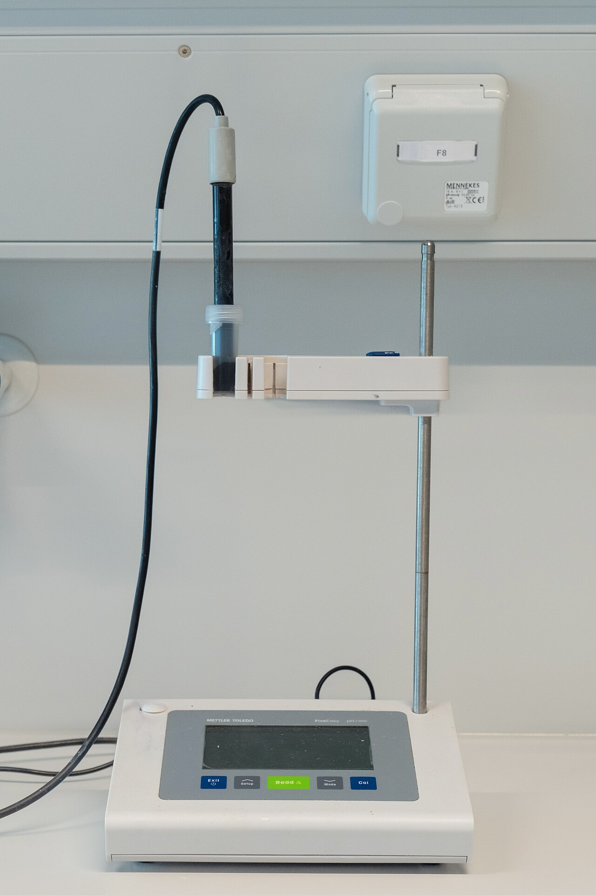
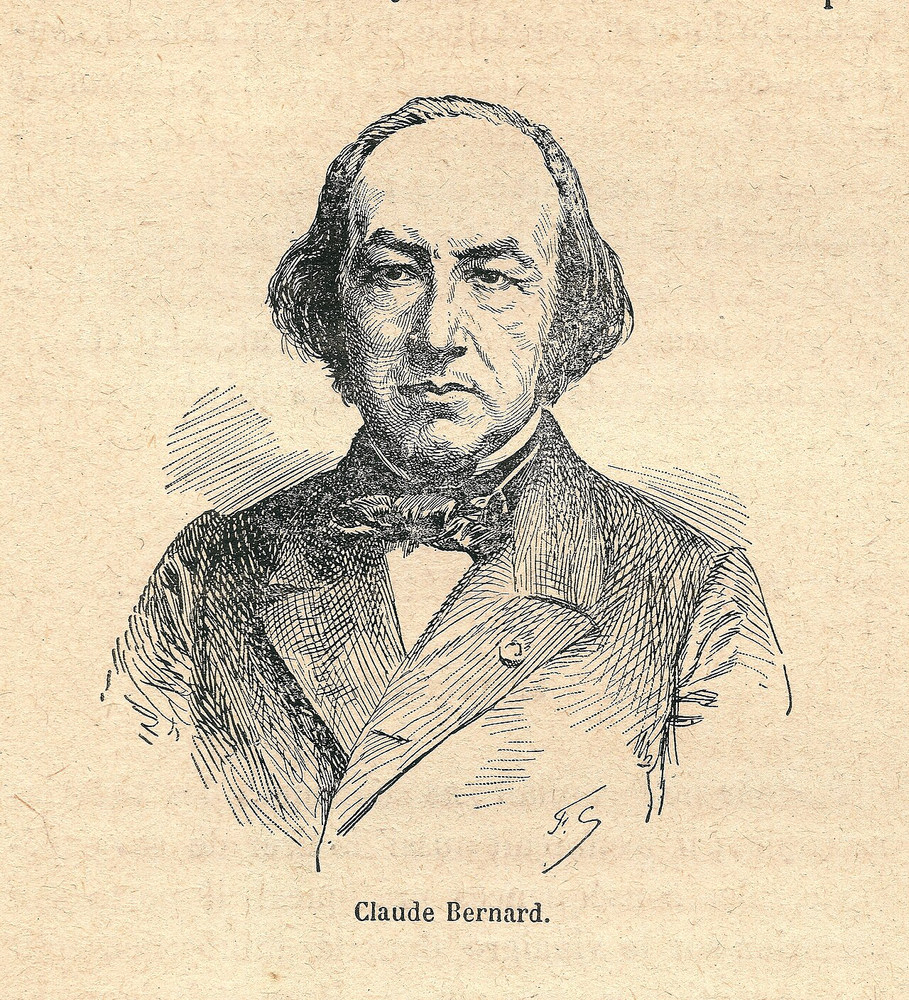

内环境的稳态
本期导读
实验 · 概念 · 调节机制 · 失调与意义
视频原话 · 导读3 句
- 同学们好！这节课梳理人教版选择性必修一第一章第二节——内环境的稳态。7.4s
- 这一节高考常考模拟生物体维持pH稳定的实验、稳态的调节机制，以及稳态失调的实例分析。8.9s
- 我们按七个考点梳理，每个考点都讲清楚怎么考、怎么做。5.6s
模拟pH稳定的实验01#
自来水
对照组
缓冲液
对照组
肝匀浆
实验组（生物材料）
① 各取 25 mL，测起始 pH → 逐滴加入 0.1 mol/L HCl，每 5 滴测一次，共 30 滴
② 充分冲洗烧杯 → 换用 0.1 mol/L NaOH 重复实验
③ 以滴数为横坐标、pH 为纵坐标画曲线

自来水缓冲液肝匀浆（示意曲线）
滴加 HCl
滴加 NaOH
结论：生物材料类似于缓冲液，含缓冲物质，能维持 pH 相对稳定
考法
自变量：材料种类、酸碱滴数；因变量：pH 变化；自来水组、缓冲液组都是对照组
视频原话6 句
- 考点一，实验：模拟生物体维持pH的稳定。4.9s
- 实验分三组：自来水、缓冲液和生物材料，比如肝匀浆。每组取25 mL，先测起始pH，再逐滴加入0.1 mol/L的HCl，每加5滴测一次pH，一共加30滴。16.4s
- 充分冲洗烧杯后，再用0.1 mol/L的NaOH重复实验。以滴数为横坐标、pH为纵坐标画出曲线。10.6s
- 结果：自来水的pH变化明显；缓冲液和肝匀浆的pH变化很小。6.8s
- 结论：生物材料的性质类似于缓冲液而不同于自来水，说明生物材料内含有缓冲物质，能维持pH的相对稳定。10.8s
- 考法：自变量是材料的种类和滴加酸碱的量，因变量是pH的变化。自来水组和缓冲液组都是对照组，生物材料组是实验组。12.5s
稳态的概念02#

贝尔纳内环境的恒定主要依赖神经系统的调节
坎 农神经调节和体液调节共同作用，各器官、系统分工合作、协调统一 → 提出“稳态”
稳态：正常机体通过调节作用，使各个器官、系统协调活动，共同维持内环境的相对稳定状态
体温随时间的变化（示意）
易错
稳态≠恒定不变，而是动态平衡：化学成分和理化性质都在一定范围内波动。
视频原话5 句
- 考点二，稳态的概念。2.7s
- 十九世纪，法国生理学家贝尔纳推测，内环境的恒定主要依赖神经系统的调节。7.7s
- 后来，美国生理学家坎农提出了稳态的概念：内环境稳态是在神经调节和体液调节的共同作用下，通过机体各种器官、系统分工合作、协调统一而实现的。14.8s
- 现在把它表述为：正常机体通过调节作用，使各个器官、系统协调活动，共同维持内环境的相对稳定状态，叫作稳态。11.3s
- 易错：稳态不是恒定不变，而是一种动态平衡。内环境的化学成分和理化性质都在一定范围内波动。9.9s
稳态的调节机制03#
消化系统
呼吸系统
循环系统
泌尿系统
直接参与维持内环境稳态的系统
三种调节相互联系，构成调节网络
主要调节机制：神经—体液—免疫调节网络
视频原话3 句
- 考点三，稳态的调节机制。3.0s
- 直接参与维持内环境稳态的，有消化、呼吸、循环、泌尿四大系统，而它们的协调活动离不开调节。9.9s
- 目前普遍认为，神经—体液—免疫调节网络是机体维持稳态的主要调节机制。6.9s
调节能力有限度04#
考点四：调节能力有一定限度
外界环境变化过于剧烈
或自身调节功能出现障碍
→ 内环境稳态遭到破坏
或自身调节功能出现障碍
→ 内环境稳态遭到破坏
例：高原反应 —— 头痛、乏力、心跳加快
考法
“稳态能一直维持”“调节能力无限”都错。
视频原话3 句
- 考点四，人体维持稳态的调节能力是有一定限度的。当外界环境的变化过于剧烈，或者人体自身的调节功能出现障碍时，内环境稳态就会遭到破坏。14.0s
- 比如，到高海拔地区，有人会出现头痛、乏力、心跳加快等高原反应，就是外界环境的变化超出了调节能力。10.4s
- 考法：题目说“稳态能一直维持”或“调节能力是无限的”，都是错的。6.3s
稳态失调与疾病05#
| 失调的对象 | 失调情况 | 结果 |
|---|---|---|
| 成分血糖 | 血糖浓度过低 | 低血糖症状 |
| 成分代谢废物 | 尿素等不能及时排出 | 尿毒症 |
| 理化性质pH | pH 失调 | 酸中毒、碱中毒 |
| 理化性质温度 | 体温失调 | 发烧、中暑 |
| 理化性质渗透压 | 渗透压失调 | 细胞吸水或失水，形态和功能异常 |
| 成分Ca2+ | 血钙过低 / 过高 | 抽搐 / 肌无力 |
考法
给出病症 → 判断是哪种成分或哪种理化性质失调。
视频原话5 句
- 考点五，内环境稳态失调与疾病。3.7s
- 先看成分失调：血糖浓度过低，会出现低血糖症状；尿素等代谢废物不能及时排出，会引起尿毒症。10.1s
- 再看理化性质失调：pH失调，引起酸中毒或碱中毒；体温失调，出现发烧或中暑；渗透压失调，细胞会吸水或失水，形态和功能出现异常。14.1s
- 还有一个常考点：血液中Ca2+含量过低会引起抽搐，过高则会引起肌无力。7.7s
- 考法：给出一种病症，判断是哪种成分或哪种理化性质失调。6.3s
稳态的意义06#
意义：内环境稳态是机体进行正常生命活动的必要条件
酶的活性 ← 适宜的温度和 pH
细胞呼吸供能 ← 血糖和 O2 稳定供应
视频原话2 句
- 考点六，稳态的意义：内环境稳态是机体进行正常生命活动的必要条件。7.3s
- 比如，细胞代谢离不开酶，酶的活性需要适宜的温度和pH；细胞呼吸需要血糖和O2的稳定供应，才能为生命活动提供能量。12.0s
稳态概念的发展07#
稳态概念的发展：生命系统的各个层次都普遍存在稳态
分子水平
基因表达的稳态
激素分泌的稳态
酶活性的稳态
细胞水平
细胞分裂和分化的稳态
器官水平
心脏活动的稳态（血压、心率）
消化腺分泌消化液的稳态
群体水平
种群数量变化的稳态
生态系统结构和功能的稳态
考法
“稳态只存在于人体内环境中”——错。
视频原话5 句
- 考点七，稳态概念的发展。稳态已经成为生命科学的一大基本概念，在生命系统的各个层次都普遍存在。10.4s
- 分子水平：基因表达的稳态、激素分泌的稳态、酶活性的稳态。6.2s
- 细胞水平：细胞分裂和分化的稳态。器官水平：心脏活动的稳态，比如血压和心率；还有消化腺分泌消化液的稳态。11.4s
- {群体水平|brown}：种群数量变化的稳态，生态系统结构和功能的稳态。6.4s
- 考法：“稳态只存在于人体内环境中”，这种说法是错的。5.6s
易错速查✓
先自己判断，再点按钮查看对错与解析。
- 1稳态是指成分和理化性质恒定不变说法错误：它们处于动态平衡之中
- 2神经—体液—免疫调节网络是稳态的主要调节机制说法正确。
- 3内环境稳态时，人一定不会患病说法错误：如遗传病，稳态时也可能发生
- 4模拟实验中，自来水组是对照组说法正确。
- 5人体维持稳态的调节能力是无限的说法错误：调节能力有一定限度
- 6稳态只存在于人体内环境中说法错误：生命系统的各个层次都存在稳态
记住“动态平衡”，这一节稳稳拿分！
视频原话 · 易错速查5 句
- 最后，用六道判断题检验一下。3.6s
- 内环境稳态是指成分和理化性质恒定不变？错，它们处于动态平衡之中。神经—体液—免疫调节网络是稳态的主要调节机制？对。13.2s
- 内环境稳态时，人一定不会患病？错，比如遗传病。模拟实验中，自来水组是对照组？对。9.9s
- 人体维持稳态的调节能力是无限的？错，它有一定限度。稳态只存在于人体内环境中？错，各个生命层次都存在稳态。12.5s
- 七个考点串成一条线：用实验认识稳态，理解稳态的概念、机制和限度，再看失调、意义和发展。掌握这些，这一节就能稳稳拿分！我们下期再见！14.8s
图片来源
图片来源：Wikimedia Commons —— 佚名《Claude Bernard》公有领域；佚名《Walter Bradford Cannon》CC BY 4.0；OER CampLev《PH-Meter METTLER TOLEDO FiveEasy》CC BY-SA 4.0
Photo: OER CampLev, CC BY-SA 4.0